0. atlas 사고 흐름 — visualization companion + DepMap deferred
"Paper 9랑 뭐 달라? 17 figures + 9 tables는 어떻게 좁힌 거야? DepMap이 왜 deferred야? 'live inspection' 무슨 뜻?" — 이 4가지 결정의 근거.
0.1 Paper 9 vs Paper 10 — 같은 anchor 다른 형태
| Paper 9 — Prioritization map | Paper 10 — SL Atlas (this) | |
|---|---|---|
| Anchor | Paper 1 DM1/RAI-lineage axis | Same — Paper 1 DM1/RAI-lineage axis |
| Output form | Narrative + tables, prioritization list | Visualization-first — 17 figures + 9 sortable tables + drug landscape |
| Reader use | "Which axis to study?" 의사결정 | "Browse + inspect" 도구 |
| Companion role | Lead | Visualization companion |
| SL claim | Hypothesis-only | Hypothesis-only (same) |
| DepMap | Deferred | Deferred |
0.2 17 figures + 9 tables — 어떻게 구성됐나
Atlas는 narrative paper와 다르게 "browse depth"가 핵심. figure/table 구성을 의도적으로 dense하게:
| Asset class | Count | Purpose |
|---|---|---|
| Atlas figures | 17 | DM1 anchor × candidate axis × visualization layer (UMAP/heatmap/network) |
| Sortable tables | 9 | Drug landscape + candidate ranking + literature pointers; live sort/filter UX |
| Per-class annotation | — | Each candidate class에 대해 drug repositioning 후보 sketch (literature-driven, not validated) |
0.3 DepMap이 왜 deferred인가
DepMap perturbation data를 쓰면 "synthetic-lethal" claim 강도가 올라간다. 그런데 Paper 10은 의도적으로 안 쓴다.
| Reason | Detail |
|---|---|
| ① Marathon attention | Paper 1 ship (6/13)이 우선. DepMap 분석 추가 시 marathon displacement. |
| ② Cell line ≠ tumor | DepMap은 cancer cell line panel; thyroid line은 ATC-derived 위주, primary PTC/PDTC 표상 약함. Paper 10 DM1 anchor와 cohort mismatch. |
| ③ Validation 단계 분리 | Hypothesis map을 먼저 ship, 그 후 DepMap perturbation으로 validation 단계를 별도 paper(또는 Paper 10 v2)로 분리하는 게 깔끔. |
| ④ Earliest 2026-06-16 | Paper 1 + Paper 2B 정리 후 가능. 그 시점부터 DepMap full-execution 후보. |
0.4 "live inspection" UX — 무슨 뜻인가
Static figures만이 아니라 sortable tables로 reader가 직접 candidate ranking을 변경하며 browse 가능. 즉 Paper 10은 "PDF로 read"보다 "HTML로 inspect"에 최적화됐다.
- Sortable tables: drug landscape를 effect strength / confidence로 reorder 가능
- Cross-reference: figure ↔ table ↔ Paper 9 narrative ↔ Paper 12 network 간 deep-link
- Status chip: 각 candidate에 "literature support / lineage-anchored / drug exists / DepMap pending" badge
0.5 사고 흐름 한 페이지 요약
1. 한 줄 결론
2. 비전공자 배경
DM1 (dark matter 1) 은 갑상선암 안에서 "갑상선다운 정체성을 잃은 정도" 를 RNA 발현으로 읽은 점수다. 8 개 갑상선 lineage 유전자 (FOXE1/NKX2-1/PAX8/HHEX + 4 RAI gene) 가 같이 collapse 한 state. 이 collapse 가 compensatory rewiring (STAT3/AP-1/DNMT/SFK/cytokine receptor/replication stress 활성화) 을 동반하는데, 이 보상 회로의 어느 노드가 약을 누를 만큼 약한 고리인지가 atlas 의 질문.
본 atlas 는 3 개 local data layer 를 같이 본다. (1) CCLE n=13 갑상선 cell line 에서 후보 발현 × DM1_like 점수의 Pearson r — 작지만 directional sanity check. (2) DM1 vs DM2 DGE TCGA-THCA bulk 51,711 유전자 — 36 candidate 가 모두 측정됨, q-value 의 강도가 가장 분명하게 나오는 layer. (3) TCGA-THCA univariate Cox HR n=560, OS event ~18 (3.2%) — 통계력은 약하지만 state-conditional vulnerability (예: ATR / CHEK2) 의 fingerprint 가 보인다.
중요한 framing: 이 atlas 의 어떤 ranking 도 "validated synthetic lethality" 가 아니다. SL claim 은 DepMap CRISPR state-conditional dependency 검증 이후에만 가능. 이 페이지는 directional triangulation + drug-class landscape annotation 만.
2.1 용어 정리
| Term | 풀어쓴 설명 | Atlas 에서의 역할 |
|---|---|---|
| DM1_like | Paper 1 의 dark matter 1 axis. 8 RAI 유전자 within-sample-z 평균을 부호 뒤집은 점수. | 모든 layer 의 state variable. |
| Triangulation | 한 후보 / 한 class 가 3 개 layer 모두에서 일관된 방향을 보이는가. | F09 (matrix) · F11 (scoreboard) · F12 (radar) 의 핵심 측정. |
| State-conditional | DM1 state 에서만 dependency 가 켜지는 vulnerability (예: ATR/CHEK2 — bulk DGE 평탄, Cox 강함). | DDR class 의 distinguishing fingerprint. |
| Carved-out non-SL | TROP2 ADC 같이 expression-level vulnerability 인데 SL 과는 다른 mechanism. | Paper 10 framing 의 화재방화벽: SL 과 ADC 를 같은 표 안에 묶지 않음. |
| Sortable table | HTML th onclick → ascending/descending sort. | T2~T9 — atlas 의 inspection 모드 핵심. |
3. 전체 논리 흐름
strategic plan + first-pass results. 텍스트 중심 argument; 14 sections + IP angle + 12-week execution plan.
17 figures + 9 sortable tables + per-class drug-landscape. slide reuse / quick lookup 에 최적화.
§ 01 — Concept
DM1 = lineage-collapsed thyroid state (FOXE1 / NKX2-1 / PAX8 / HHEX ↓) with compensatory rewiring (STAT3 / AP-1 / DNMT / SFK / cytokine receptor / replication stress ↑). The Atlas asks: which compensatory nodes constitute druggable synthetic-lethal vulnerabilities?
Paper 10 sits downstream of Paper 1 (which defines the DM1 state) and parallels Paper 9 (which lays out the strategic plan). The Atlas adds visualization-first triangulation across three local data layers — CCLE n=13, DM1-vs-DM2 DGE on TCGA-THCA bulk, and TCGA-THCA univariate Cox — so any reviewer can read effect size, direction, and provenance at a glance.
The conceptual scaffolding is Ruppin-style (ISLE / SELECT) but does not lift their text, signatures, or pair tables. We cite their methods as prior art and run our own state-anchored analysis. The state anchor is transcriptional, not mutation-based — this is the core thyroid-specific adaptation.
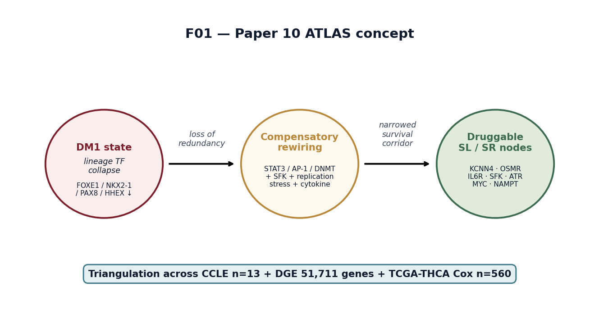
§ 02 — CCLE thyroid: DM1_like state distribution (n=13)
Within-sample z-score over the 8 RAI genes (TPO/DIO1/TSHR/PAX8/TG/FOXE1/NKX2-1/SLC5A5), sign-flipped → DM1_like. Median split partitions 6 DM1-high vs 7 DM1-low lines.
The CCLE n=13 panel is too small for any statistical claim about a single SL pair, but it provides a reproducible directional sanity check for the DM1 axis. Lines that are anaplastic / poorly differentiated (e.g., ML-1, MB1, TT, S117) cluster on the DM1-high side; the well-differentiated follicular lines (FTC133) and the BRAF V600E papillary line (BCPAP) cluster on the DM1-low side.
The TF-collapse score (FOXE1/NKX2-1/PAX8/HHEX z-mean) tracks closely with DM1_like, as expected — these are not orthogonal axes but two views of the same lineage-collapse phenomenon.
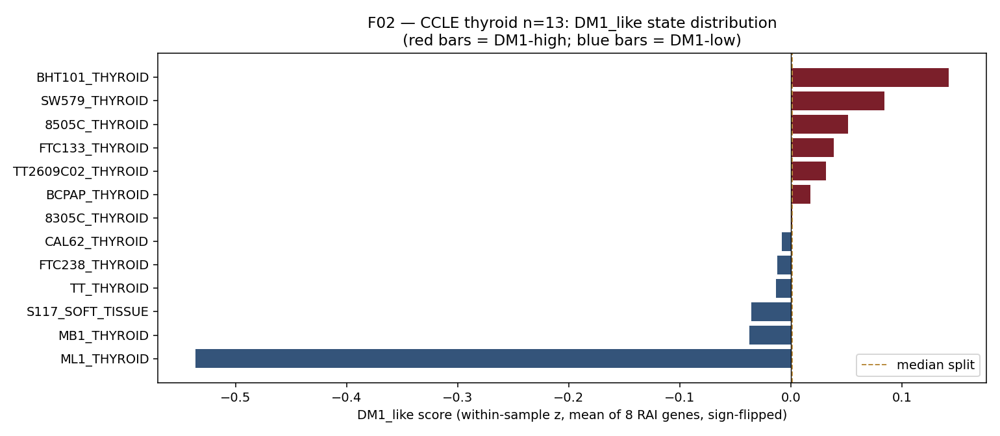
Table T2 — CCLE line state (sortable)
| CCLE line ⇅ | Short name ⇅ | Oncotree ⇅ | DM1_like score ⇅ | TF collapse z ⇅ | DM1 high? ⇅ |
|---|---|---|---|---|---|
| 8305C_THYROID | 8305C | THAP | 0.001 | 0.089 | 0 |
| 8505C_THYROID | 8505C | THAP | 0.052 | 0.044 | 1 |
| BCPAP_THYROID | B-CPAP | THPA | 0.018 | 0.072 | 1 |
| BHT101_THYROID | BHT-101 | THAP | 0.142 | -0.141 | 1 |
| CAL62_THYROID | CAL-62 | THAP | -0.008 | 0.168 | 0 |
| FTC133_THYROID | FTC-133 | THFO | 0.038 | 0.034 | 1 |
| FTC238_THYROID | FTC-238 | THFO | -0.012 | 0.227 | 0 |
| MB1_THYROID | ? | THAP | -0.038 | 0.239 | 0 |
| ML1_THYROID | ML-1 | THFO | -0.536 | 0.862 | 0 |
| S117_SOFT_TISSUE | ? | THYROID | -0.036 | 0.193 | 0 |
| SW579_THYROID | SW579 | THAP | 0.084 | -0.082 | 1 |
| TT2609C02_THYROID | TT2609-C02 | THFO | 0.031 | 0.070 | 1 |
| TT_THYROID | TT | THYROID | -0.013 | 0.057 | 0 |
§ 03 — CCLE candidate-target correlation, per class
Pearson r between each candidate's CCLE expression and the DM1_like score. Positive r = candidate up in DM1-like lines.
Only 8 of 36 candidates are present in the local CCLE thyroid expression file (a thyroid-only 4007-gene matrix). For these 8, the directional signal points exactly where Paper 9's hypothesis predicts: NAMPT, TACSTD2, KCNN4, LYN positive (DM1-up); OSMR, PAX8, NKX2-1, FOXE1 negative (DM1-down — three of those four are lineage TF anchors and serve as the floor sanity check).
Because n=13, all candidate p-values are nominal (only the lineage anchor FOXE1 reaches p<1e-4). The full DepMap CRISPR contrast is the gating analysis for any SL claim — it is deferred (D1 in the registry).
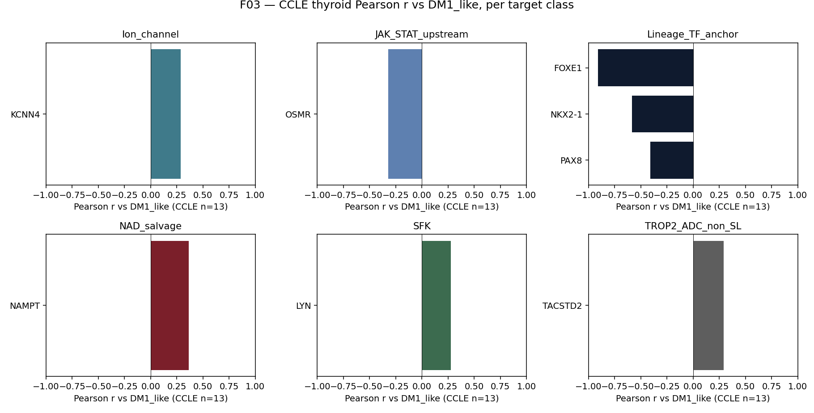
Table T3 — CCLE Pearson r (sortable, only present-in-CCLE genes)
| Gene ⇅ | Class ⇅ | Pearson r ⇅ | p ⇅ | mean (DM1-high) ⇅ | mean (DM1-low) ⇅ | Δ (high − low) ⇅ |
|---|---|---|---|---|---|---|
| NAMPT | NAD_salvage | 0.364 | 0.222 | 41.95 | 21.98 | 19.97 |
| TACSTD2 | TROP2_ADC_non_SL | 0.293 | 0.332 | 9.35 | 0.53 | 8.82 |
| KCNN4 | Ion_channel | 0.289 | 0.339 | 15.83 | 6.48 | 9.35 |
| LYN | SFK | 0.278 | 0.357 | 9.28 | 5.24 | 4.04 |
| OSMR | JAK_STAT_upstream | -0.319 | 0.287 | 23.95 | 16.82 | 7.13 |
| PAX8 | Lineage_TF_anchor | -0.410 | 0.164 | 9.27 | 63.34 | -54.07 |
| NKX2-1 | Lineage_TF_anchor | -0.583 | 0.037 | 13.81 | 16.84 | -3.02 |
| FOXE1 | Lineage_TF_anchor | -0.910 | 1.55e-05 | 1.70 | 15.46 | -13.75 |
§ 04 — DM1 vs DM2 DGE: full candidate volcano + class summary
All 36 candidates measurable in the existing TCGA-THCA bulk DGE (51,711 genes). Volcano colored by class; per-class boxplot summarizes coherence.
This is the strongest layer of the first-pass triangulation. Every candidate clears measurement; many clear q<0.05 with substantial effect sizes. The picture that emerges is not "JAK/STAT core (STAT3/JAK1/JAK2) is the SL window" — STAT3 itself is essentially flat (q NS) at bulk. Instead, the JAK/STAT signal lives at upstream cytokine receptors (OSMR log2FC=−1.44 q=2e-15; IL6R log2FC=−1.34 q=5e-14). This is a meaningful re-framing for any drug-class strategy: anti-IL6R (tocilizumab-class) or anti-OSMR / dual-JAK becomes the candidate, not napabucasin.
SFK is a coherent class signal — LYN, SRC, FYN all DM1-up at q<<0.05; YES1 alone goes the other way (DM2-up, q=0.011) which is consistent with thyroid-specific YES1 biology and supports treating YES1 as a class-internal control.
KCNN4 (q=4e-32, log2FC=−4.00) and TACSTD2 (q=8e-24, log2FC=−4.14) are the two single-gene strongest DM1 markers — KCNN4 is in the SL track, TACSTD2 is the carved-out non-SL ADC track.
Lineage TFs (FOXE1, HHEX, PAX8) are all DM2-enriched as expected — sanity floor confirmed.
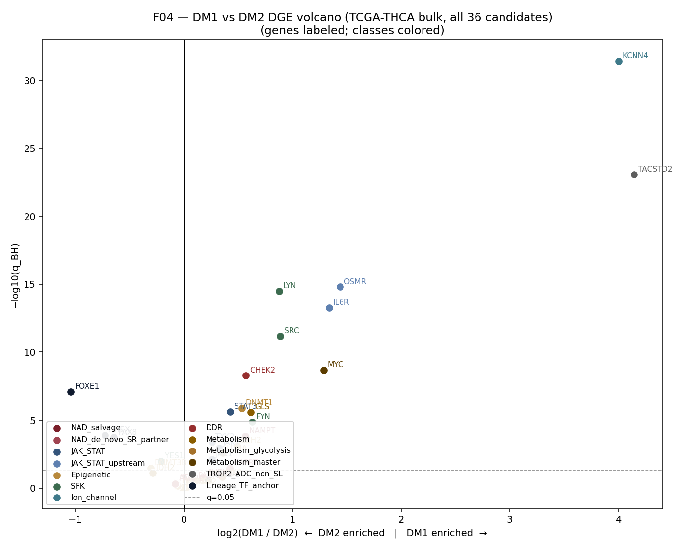
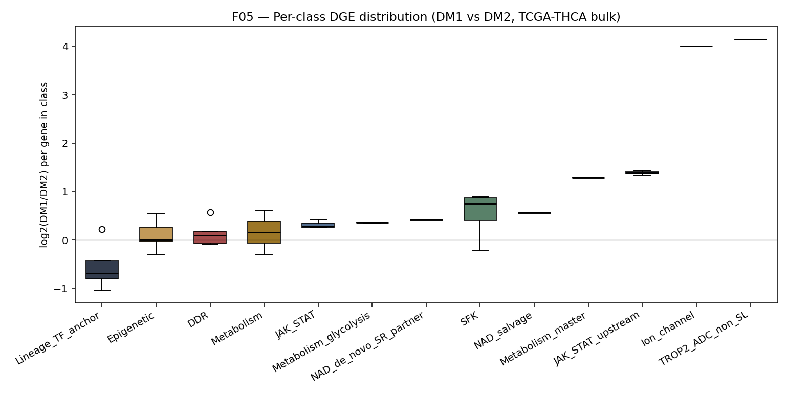
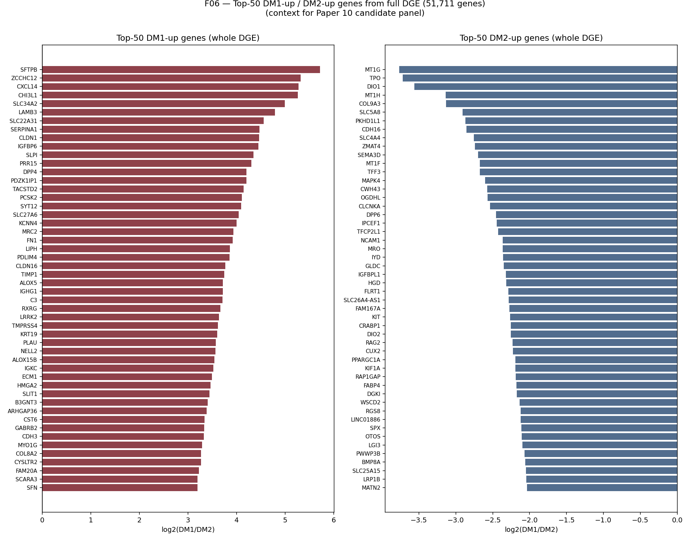
Table T4 — Full DGE candidate ranking (sortable)
| Gene ⇅ | Class ⇅ | log2(DM1/DM2) ⇅ | log2(DM2/DM1) ⇅ | t-stat ⇅ | q (BH) ⇅ | mean DM1 expr ⇅ | mean DM2 expr ⇅ |
|---|---|---|---|---|---|---|---|
| TACSTD2 | TROP2_ADC_non_SL | 4.14 | -4.14 | 13.78 | 8.24e-24 | 7.18 | 3.04 |
| KCNN4 | Ion_channel | 4.00 | -4.00 | 19.60 | 3.83e-32 | 5.07 | 1.07 |
| OSMR | JAK_STAT_upstream | 1.44 | -1.44 | 9.92 | 1.59e-15 | 5.12 | 3.69 |
| IL6R | JAK_STAT_upstream | 1.34 | -1.34 | 9.17 | 5.29e-14 | 3.57 | 2.24 |
| MYC | Metabolism_master | 1.29 | -1.29 | 7.11 | 2.05e-09 | 4.15 | 2.86 |
| SRC | SFK | 0.89 | -0.89 | 8.54 | 6.70e-12 | 5.84 | 4.96 |
| LYN | SFK | 0.88 | -0.88 | 9.72 | 3.18e-15 | 6.01 | 5.13 |
| FYN | SFK | 0.63 | -0.63 | 5.12 | 1.37e-05 | 7.22 | 6.59 |
| GLS | Metabolism | 0.62 | -0.62 | 5.47 | 2.55e-06 | 6.91 | 6.30 |
| CHEK2 | DDR | 0.57 | -0.57 | 6.97 | 5.15e-09 | 3.17 | 2.60 |
| NAMPT | NAD_salvage | 0.56 | -0.56 | 4.41 | 1.56e-04 | 5.77 | 5.21 |
| DNMT1 | Epigenetic | 0.53 | -0.53 | 5.63 | 1.33e-06 | 5.90 | 5.37 |
| EZH2 | Epigenetic | 0.49 | -0.49 | 3.97 | 7.65e-04 | 2.67 | 2.18 |
| STAT3 | JAK_STAT | 0.43 | -0.43 | 5.50 | 2.40e-06 | 7.75 | 7.32 |
| NAPRT | NAD_de_novo_SR_partner | 0.42 | -0.42 | 2.63 | 0.034 | 4.34 | 3.92 |
| LDHA | Metabolism_glycolysis | 0.36 | -0.36 | 3.55 | 0.003 | 8.28 | 7.93 |
| HK2 | Metabolism_glycolysis | 0.35 | -0.35 | 1.84 | 0.159 | 6.42 | 6.07 |
| JAK2 | JAK_STAT | 0.32 | -0.32 | 3.83 | 0.001 | 3.98 | 3.65 |
| JAK1 | JAK_STAT | 0.26 | -0.26 | 3.21 | 0.007 | 7.40 | 7.14 |
| TYK2 | JAK_STAT | 0.26 | -0.26 | 4.16 | 4.13e-04 | 6.17 | 5.91 |
| NKX2-1 | Lineage_TF_anchor | 0.22 | -0.22 | 1.52 | 0.256 | 8.08 | 7.86 |
| DNMT3A | Epigenetic | 0.18 | -0.18 | 1.67 | 0.208 | 4.98 | 4.79 |
| CHEK1 | DDR | 0.18 | -0.18 | 1.75 | 0.184 | 2.36 | 2.19 |
| PARP2 | DDR | 0.09 | -0.09 | 1.44 | 0.287 | 4.15 | 4.06 |
| HDAC2 | Epigenetic | 0.02 | -0.02 | 0.31 | 0.845 | 6.18 | 6.16 |
| KDM1A | Epigenetic | -0.02 | 0.02 | -0.22 | 0.892 | 6.26 | 6.27 |
| HDAC6 | Epigenetic | -0.02 | 0.02 | -0.30 | 0.853 | 5.88 | 5.90 |
| HDAC1 | Epigenetic | -0.06 | 0.06 | -0.57 | 0.704 | 7.53 | 7.58 |
| ATR | DDR | -0.08 | 0.08 | -1.04 | 0.462 | 4.89 | 4.97 |
| PARP1 | DDR | -0.08 | 0.08 | -0.95 | 0.500 | 6.79 | 6.87 |
| YES1 | SFK | -0.21 | 0.21 | -3.07 | 0.011 | 5.49 | 5.70 |
| IDH2 | Metabolism | -0.29 | 0.29 | -2.25 | 0.076 | 5.77 | 6.06 |
| DNMT3B | Epigenetic | -0.31 | 0.31 | -2.62 | 0.034 | 2.19 | 2.50 |
| PAX8 | Lineage_TF_anchor | -0.64 | 0.64 | -4.41 | 1.89e-04 | 9.36 | 10.01 |
| HHEX | Lineage_TF_anchor | -0.73 | 0.73 | -4.48 | 1.26e-04 | 6.63 | 7.36 |
| FOXE1 | Lineage_TF_anchor | -1.04 | 1.04 | -6.32 | 8.00e-08 | 7.84 | 8.88 |
§ 05 — TCGA-THCA univariate Cox HR per candidate (whole + DM1-high)
Lifelines CoxPHFitter on UCSC pancan log2(norm+1) expression × OS. Whole cohort n=560, ~18 events; DM1-high subset n=280.
TCGA-THCA's well-known limitation: very low OS event rate (~3.2%). Cox is therefore underpowered for most genes — the absence of significance is mostly a power statement, not evidence of irrelevance. Effect sizes from this layer are best treated as directional priors for downstream replication (GSE76039, Korean K2, Bundang).
That said, three nominally significant hits emerge in the whole cohort: TYK2 HR=0.15 p=0.006 (low TYK2 → worse OS — re-frame as protective modifier, not a target); ATR HR=6.88 p=0.024 (high ATR → worse OS — fits replication-stress addiction hypothesis); CHEK2 HR=0.48 p=0.040 (DDR loss → worse OS, direction-consistent with ATR finding). Together ATR + CHEK2 motivate the ATRi+PARPi combination as a state-conditional vulnerability even though the bulk DGE direction is flat.
The DM1-high subset (n=280) is even more underpowered; no gene reaches p<0.05. Top trends are MYC (p=0.05), HHEX (p=0.10), LDHA (p=0.10), GLS (p=0.15) — all consistent with a metabolic-axis story but each individual signal is weak.
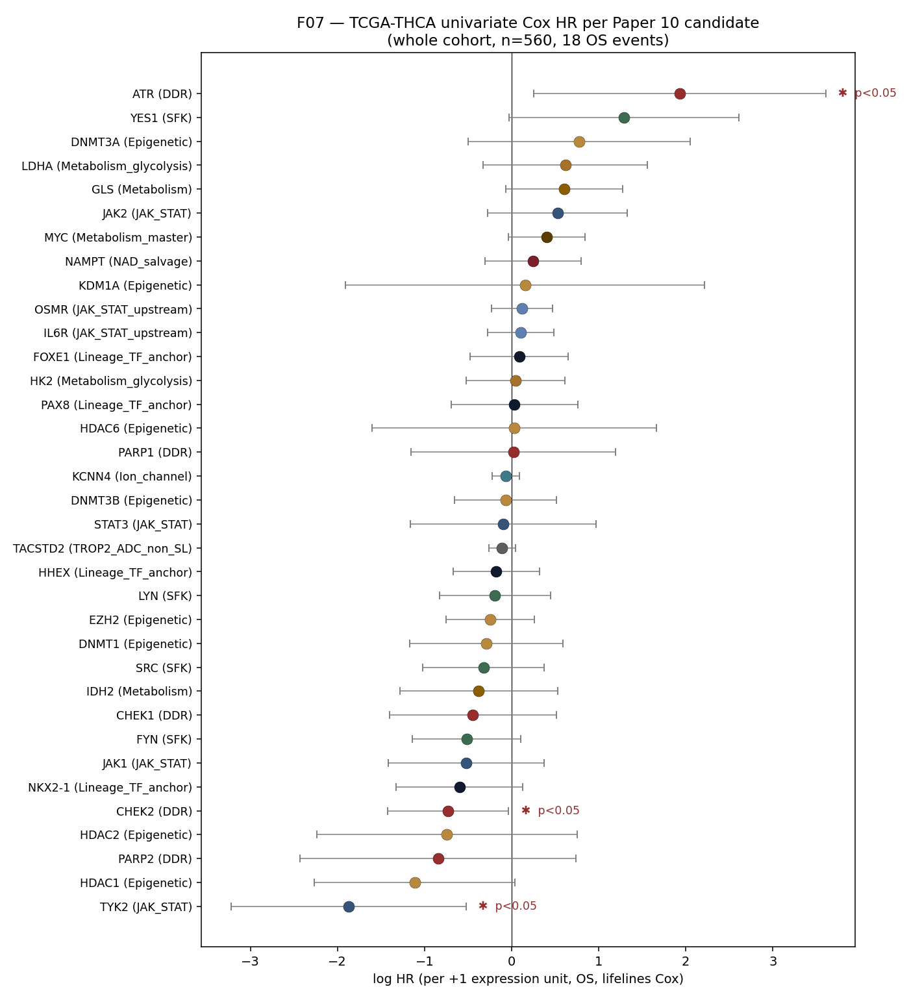
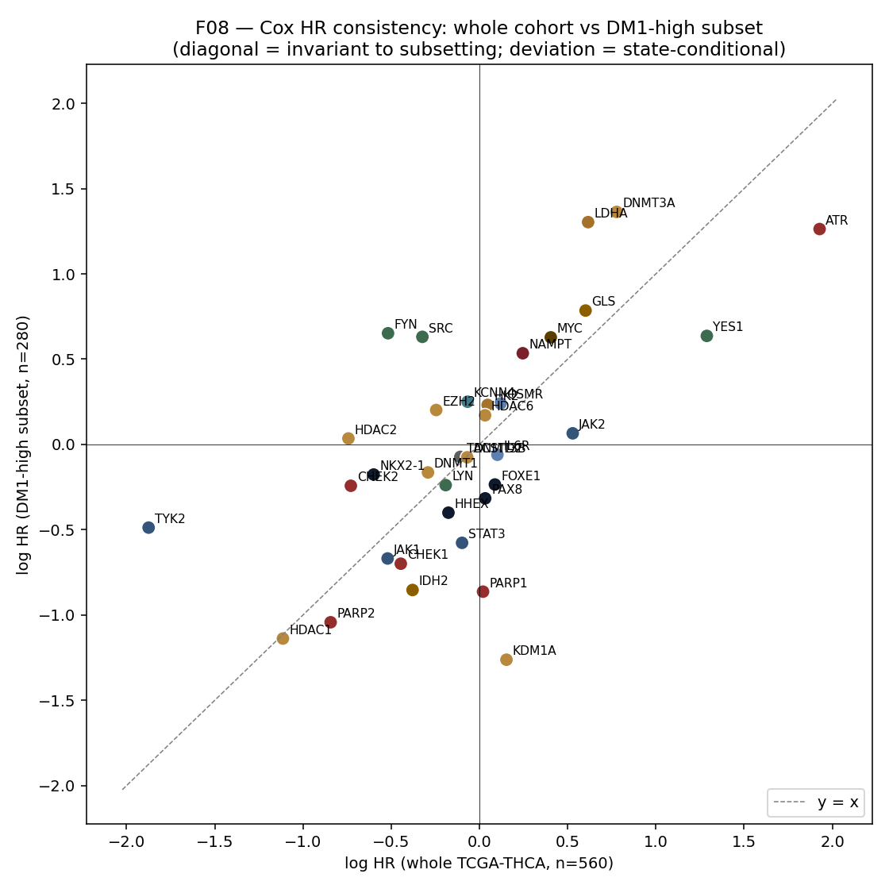
Table T5 — whole TCGA-THCA Cox
| Gene ⇅ | Class ⇅ | n ⇅ | HR ⇅ | HR low 95% ⇅ | HR high 95% ⇅ | p ⇅ |
|---|---|---|---|---|---|---|
| TYK2 | JAK_STAT | 560 | 0.153 | 0.040 | 0.591 | 0.006 |
| ATR | DDR | 560 | 6.876 | 1.284 | 36.826 | 0.024 |
| CHEK2 | DDR | 560 | 0.482 | 0.241 | 0.967 | 0.040 |
| YES1 | SFK | 560 | 3.629 | 0.970 | 13.568 | 0.055 |
| HDAC1 | Epigenetic | 560 | 0.328 | 0.104 | 1.040 | 0.058 |
| MYC | Metabolism_master | 560 | 1.498 | 0.967 | 2.322 | 0.070 |
| GLS | Metabolism | 560 | 1.825 | 0.932 | 3.574 | 0.080 |
| FYN | SFK | 560 | 0.596 | 0.320 | 1.109 | 0.102 |
| NKX2-1 | Lineage_TF_anchor | 560 | 0.549 | 0.266 | 1.134 | 0.105 |
| TACSTD2 | TROP2_ADC_non_SL | 560 | 0.897 | 0.771 | 1.044 | 0.161 |
| JAK2 | JAK_STAT | 560 | 1.697 | 0.761 | 3.782 | 0.196 |
| LDHA | Metabolism_glycolysis | 560 | 1.851 | 0.721 | 4.756 | 0.201 |
| DNMT3A | Epigenetic | 560 | 2.177 | 0.608 | 7.791 | 0.232 |
| JAK1 | JAK_STAT | 560 | 0.594 | 0.243 | 1.455 | 0.255 |
| PARP2 | DDR | 560 | 0.430 | 0.088 | 2.099 | 0.297 |
| HDAC2 | Epigenetic | 560 | 0.476 | 0.107 | 2.119 | 0.330 |
| EZH2 | Epigenetic | 560 | 0.783 | 0.472 | 1.298 | 0.343 |
| SRC | SFK | 560 | 0.724 | 0.361 | 1.450 | 0.362 |
| CHEK1 | DDR | 560 | 0.640 | 0.245 | 1.671 | 0.362 |
| NAMPT | NAD_salvage | 560 | 1.278 | 0.738 | 2.215 | 0.381 |
| KCNN4 | Ion_channel | 560 | 0.935 | 0.800 | 1.092 | 0.395 |
| IDH2 | Metabolism | 560 | 0.684 | 0.277 | 1.693 | 0.412 |
| HHEX | Lineage_TF_anchor | 560 | 0.839 | 0.511 | 1.378 | 0.488 |
| OSMR | JAK_STAT_upstream | 560 | 1.127 | 0.796 | 1.596 | 0.499 |
| DNMT1 | Epigenetic | 560 | 0.747 | 0.310 | 1.801 | 0.516 |
| LYN | SFK | 560 | 0.826 | 0.437 | 1.560 | 0.555 |
| IL6R | JAK_STAT_upstream | 560 | 1.107 | 0.757 | 1.620 | 0.600 |
| FOXE1 | Lineage_TF_anchor | 560 | 1.092 | 0.621 | 1.919 | 0.761 |
| DNMT3B | Epigenetic | 560 | 0.933 | 0.521 | 1.673 | 0.816 |
| STAT3 | JAK_STAT | 560 | 0.906 | 0.313 | 2.626 | 0.856 |
| HK2 | Metabolism_glycolysis | 560 | 1.047 | 0.594 | 1.848 | 0.873 |
| KDM1A | Epigenetic | 560 | 1.166 | 0.148 | 9.169 | 0.884 |
| PAX8 | Lineage_TF_anchor | 560 | 1.033 | 0.499 | 2.139 | 0.930 |
| HDAC6 | Epigenetic | 560 | 1.032 | 0.202 | 5.281 | 0.970 |
| PARP1 | DDR | 560 | 1.021 | 0.315 | 3.303 | 0.973 |
Table T6 — DM1-high subset Cox
| Gene ⇅ | Class ⇅ | n ⇅ | HR (DM1-high) ⇅ | HR low 95% ⇅ | HR high 95% ⇅ | p ⇅ |
|---|---|---|---|---|---|---|
| MYC | Metabolism_master | 280 | 1.873 | 0.991 | 3.543 | 0.054 |
| HHEX | Lineage_TF_anchor | 280 | 0.670 | 0.414 | 1.086 | 0.104 |
| LDHA | Metabolism_glycolysis | 280 | 3.681 | 0.764 | 17.737 | 0.104 |
| GLS | Metabolism | 280 | 2.192 | 0.750 | 6.411 | 0.152 |
| IDH2 | Metabolism | 280 | 0.426 | 0.126 | 1.435 | 0.169 |
| HDAC1 | Epigenetic | 280 | 0.320 | 0.062 | 1.647 | 0.173 |
| NAMPT | NAD_salvage | 280 | 1.707 | 0.698 | 4.174 | 0.241 |
| DNMT3A | Epigenetic | 280 | 3.908 | 0.386 | 39.564 | 0.248 |
| ATR | DDR | 280 | 3.535 | 0.391 | 31.941 | 0.261 |
| PARP2 | DDR | 280 | 0.353 | 0.045 | 2.784 | 0.323 |
| CHEK1 | DDR | 280 | 0.497 | 0.119 | 2.083 | 0.339 |
| JAK1 | JAK_STAT | 280 | 0.512 | 0.127 | 2.063 | 0.347 |
| PARP1 | DDR | 280 | 0.422 | 0.070 | 2.551 | 0.347 |
| FYN | SFK | 280 | 1.919 | 0.440 | 8.371 | 0.386 |
| KCNN4 | Ion_channel | 280 | 1.284 | 0.709 | 2.326 | 0.408 |
| KDM1A | Epigenetic | 280 | 0.283 | 0.013 | 6.098 | 0.420 |
| OSMR | JAK_STAT_upstream | 280 | 1.271 | 0.696 | 2.323 | 0.435 |
| FOXE1 | Lineage_TF_anchor | 280 | 0.790 | 0.436 | 1.433 | 0.439 |
| YES1 | SFK | 280 | 1.889 | 0.304 | 11.733 | 0.495 |
| SRC | SFK | 280 | 1.879 | 0.291 | 12.131 | 0.507 |
| STAT3 | JAK_STAT | 280 | 0.562 | 0.084 | 3.739 | 0.551 |
| HK2 | Metabolism_glycolysis | 280 | 1.261 | 0.540 | 2.945 | 0.593 |
| PAX8 | Lineage_TF_anchor | 280 | 0.729 | 0.213 | 2.497 | 0.615 |
| LYN | SFK | 280 | 0.788 | 0.282 | 2.198 | 0.649 |
| EZH2 | Epigenetic | 280 | 1.224 | 0.475 | 3.150 | 0.676 |
| CHEK2 | DDR | 280 | 0.785 | 0.245 | 2.512 | 0.683 |
| TACSTD2 | TROP2_ADC_non_SL | 280 | 0.930 | 0.615 | 1.404 | 0.728 |
| TYK2 | JAK_STAT | 280 | 0.614 | 0.032 | 11.678 | 0.746 |
| NKX2-1 | Lineage_TF_anchor | 280 | 0.838 | 0.247 | 2.847 | 0.777 |
| DNMT1 | Epigenetic | 280 | 0.848 | 0.197 | 3.655 | 0.825 |
| IL6R | JAK_STAT_upstream | 280 | 0.941 | 0.506 | 1.751 | 0.848 |
| DNMT3B | Epigenetic | 280 | 0.927 | 0.312 | 2.760 | 0.892 |
| HDAC6 | Epigenetic | 280 | 1.186 | 0.096 | 14.707 | 0.894 |
| JAK2 | JAK_STAT | 280 | 1.067 | 0.354 | 3.222 | 0.908 |
| HDAC2 | Epigenetic | 280 | 1.036 | 0.070 | 15.238 | 0.980 |
§ 06 — Triangulation: target class × evidence layer
Per-class summary across DGE / CCLE / Cox. Heatmap (F09) standardizes within-layer; scoreboard (F11) lays out verdicts; radar (F12) shows class-level shape.
The triangulation matrix (F09) collapses 36 genes × 3 evidence layers into 12 classes × 3 z-scores. Ion_channel, JAK/STAT_upstream, SFK, TROP2, and NAD_salvage have positive DGE × positive CCLE — co-directional across the two transcriptomic layers. DDR, by contrast, is flat at bulk DGE but lights up in Cox — that is the state-conditional fingerprint we are looking for.
The scoreboard (F11) names verdicts: KCNN4 (lead candidate), OSMR/IL6R (receptor-blockade SL), SFK (consistent class signal), DDR (state-conditional), MYC + metabolic (SL pair), NAMPT (needs DepMap), TROP2 (carved-out ADC).
The radar (F12) shows the per-class shape: ion-channel is sharp DGE+ with weak Cox; DDR is sharp Cox with weak DGE; SFK is balanced.
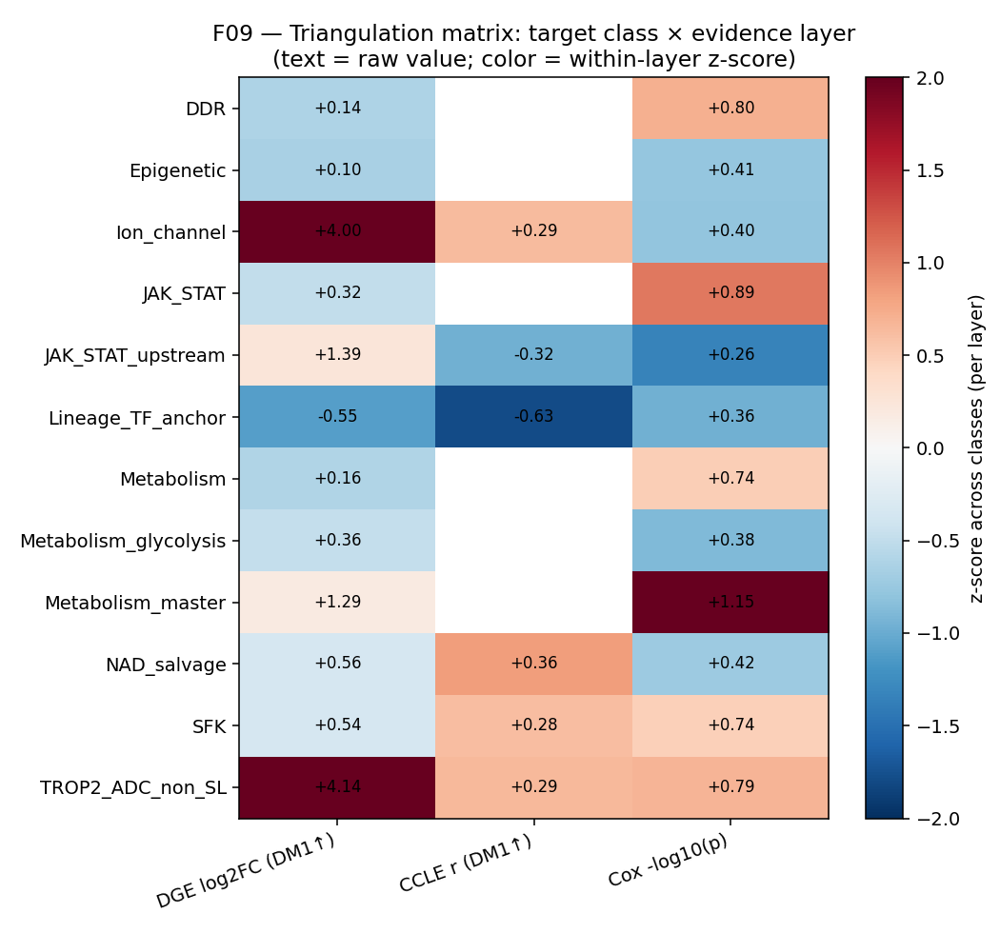
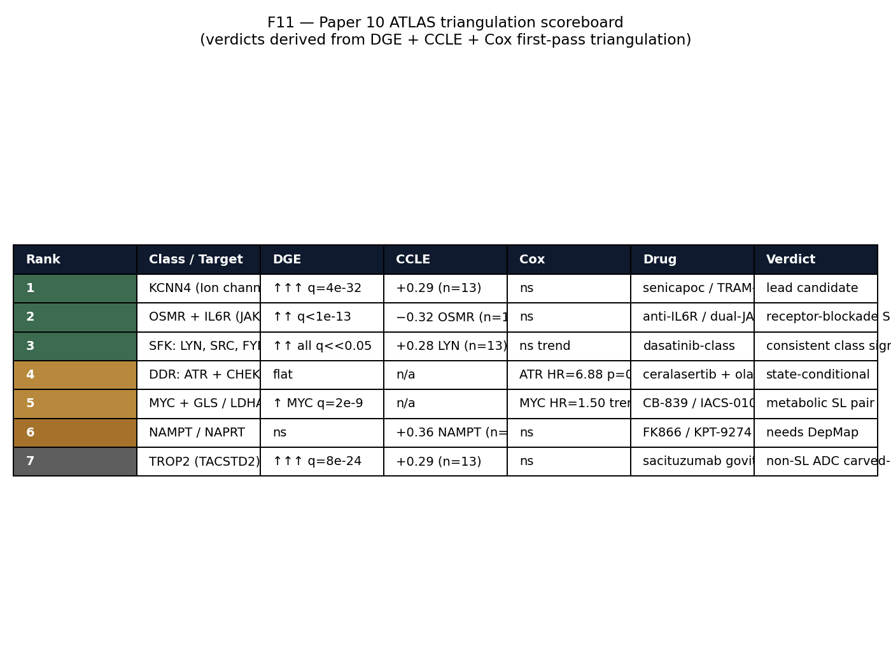
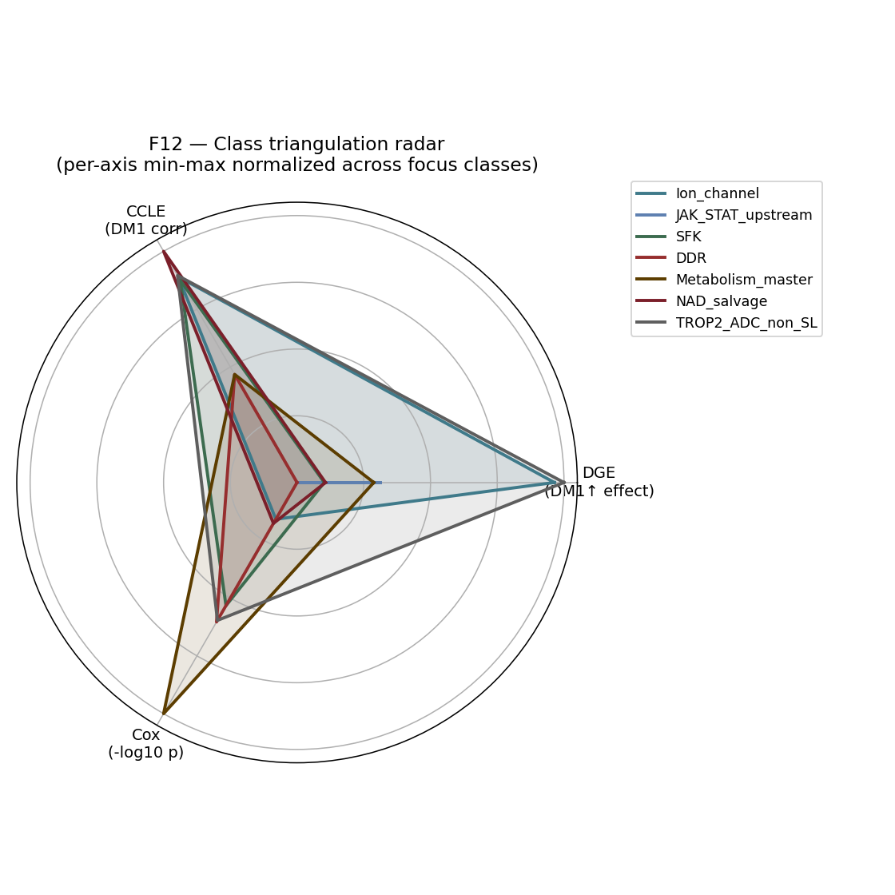
Table T7 — Class summary (sortable)
| Class ⇅ | n genes ⇅ | DGE mean log2(DM1/DM2) ⇅ | DGE mean t ⇅ | CCLE measured ⇅ | CCLE mean r ⇅ | Cox n ⇅ | Cox mean log HR ⇅ | Cox min p ⇅ |
|---|---|---|---|---|---|---|---|---|
| TROP2_ADC_non_SL | 1 | 4.14 | 13.78 | 1 | 0.293 | 1 | -0.108 | 0.161 |
| Ion_channel | 1 | 4.00 | 19.60 | 1 | 0.289 | 1 | -0.067 | 0.395 |
| JAK_STAT_upstream | 2 | 1.39 | 9.55 | 1 | -0.319 | 2 | 0.111 | 0.499 |
| Metabolism_master | 1 | 1.29 | 7.11 | 0 | 1 | 0.404 | 0.070 | |
| NAD_salvage | 1 | 0.56 | 4.41 | 1 | 0.364 | 1 | 0.246 | 0.381 |
| SFK | 4 | 0.54 | 5.08 | 1 | 0.278 | 4 | 0.064 | 0.055 |
| Metabolism_glycolysis | 2 | 0.36 | 2.69 | 0 | 2 | 0.331 | 0.201 | |
| JAK_STAT | 4 | 0.32 | 4.17 | 0 | 4 | -0.491 | 0.006 | |
| Metabolism | 2 | 0.16 | 1.61 | 0 | 2 | 0.111 | 0.080 | |
| DDR | 5 | 0.14 | 1.63 | 0 | 5 | -0.014 | 0.024 | |
| Epigenetic | 8 | 0.10 | 0.98 | 0 | 8 | -0.187 | 0.058 | |
| Lineage_TF_anchor | 4 | -0.55 | -3.42 | 3 | -0.634 | 4 | -0.164 | 0.105 |
§ 07 — Top-5 Cox candidates: TCGA-THCA Kaplan-Meier
Top 5 candidates by whole-cohort Cox p-value, stratified by median expression. Logrank p reported.
Median-split KM is more interpretable than continuous Cox for clinical readers. The top-5 panel (TYK2, ATR, CHEK2, YES1, HDAC1) recapitulates the Cox direction: high-ATR cohort separates worse than low-ATR cohort, etc. Logrank p values largely track Cox p but are typically slightly less significant due to the dichotomization.
Note the y-axis range (0.6–1.0) — very few events occur, so visual separation between curves is small in absolute terms even when statistically suggestive.
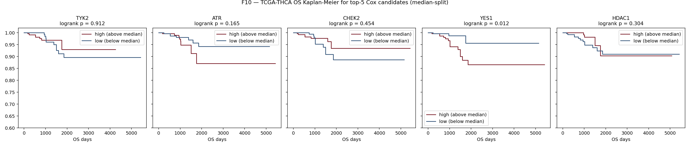
§ 08 — Lineage TF anchor sanity floor
FOXE1 / NKX2-1 / PAX8 / HHEX 4-panel: must be DM2-enriched and CCLE-negative-r if our DM1 axis is real.
This is the primary check that the entire Atlas is built on a meaningful state. All four lineage TFs are DM2-enriched in DGE (FOXE1 log2FC=+1.04 q=8e-8; HHEX +0.73 q=1e-4; PAX8 +0.64 q=2e-4; NKX2-1 not reaching nominal q) and three of four (FOXE1, NKX2-1, PAX8) show negative Pearson r vs DM1_like in CCLE. FOXE1 r=−0.91 p=1.5e-5 in n=13 is the cleanest single-gene calibration we have.
If a future iteration ever shows lineage TFs going DM1-up, the entire DM1 axis is suspect — keep this sanity floor as a regression test.
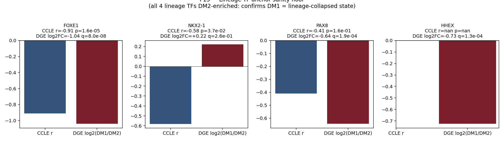
§ 09 — Drug-class landscape
Per-class lead compounds and clinical stage. The intent is translational: Paper 10 picks classes where existing approved or clinical-stage agents already exist, lowering downstream cost.
Approved or late-clinical-stage agents already exist for every major target class on the priority list — this is by design, not by chance. Composition-of-matter IP is mostly third-party; the Paper 10 IP angle is method-of-treatment: "method of selecting thyroid cancer patients for [target-class] therapy by measuring the 8-gene DM1 readout + TF-collapse score."
The TROP2 row is preserved here as a reminder that ADC vulnerability is not synthetic lethality; the entry is included because TROP2 is the strongest DM1-surface marker after KCNN4 and is already being prosecuted in the Phase B drug platform.
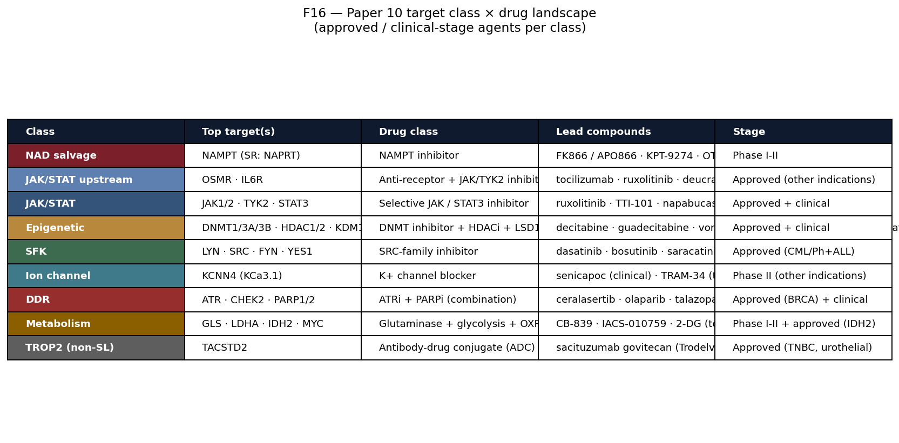
Table T8 — Per-class drug landscape
| Class | Top targets | Drug class | Lead compounds | Stage |
|---|---|---|---|---|
| NAD salvage | NAMPT (target) ↔ NAPRT (SR partner) | NAMPT inhibitor | FK866/APO866 · KPT-9274 · OT-82 | Phase I-II |
| JAK/STAT upstream receptors | OSMR · IL6R | Anti-receptor + JAK/TYK2 inhibitor | tocilizumab · ruxolitinib · deucravacitinib | Approved (other indications) |
| JAK/STAT | JAK1 · JAK2 · TYK2 · STAT3 | Selective JAK / STAT3 inhibitor | ruxolitinib · TTI-101 · napabucasin (caveat) | Approved + clinical |
| Epigenetic | DNMT1/3A/3B · HDAC1/2/6 · KDM1A · EZH2 | DNMT inhibitor + HDACi + LSD1i + EZH2i | decitabine · guadecitabine · vorinostat · GSK-2879552 · tazemetostat | Approved + clinical |
| SFK (SRC-family) | LYN · SRC · FYN · YES1 | SRC-family inhibitor | dasatinib · bosutinib · saracatinib | Approved (CML/Ph+ALL) |
| Ion channel | KCNN4 (KCa3.1) | Calcium-activated K+ channel blocker | senicapoc (clinical) · TRAM-34 (tool) | Phase II (other indications) |
| DDR / replication stress | ATR · CHEK1/2 · PARP1/2 | ATRi + PARPi (combination) | ceralasertib · olaparib · talazoparib · niraparib | Approved (BRCA) + clinical |
| Metabolism | GLS · LDHA · HK2 · IDH2 · MYC | Glutaminase + glycolysis + OXPHOS inhibitor | CB-839 · IACS-010759 · 2-DG · enasidenib (IDH2) | Phase I-II + approved (IDH2) |
| TROP2 (carved-out non-SL) | TACSTD2 | Antibody-drug conjugate (ADC) | sacituzumab govitecan (Trodelvy) · datopotamab deruxtecan | Approved (TNBC, urothelial) |
§ 10 — Deferred work registry (honest scope)
Eight deferred steps. None of these run before Paper 1 in print + marathon close (≥ 2026-06-13) + Yu sign-off.
p9_sl_first_pass.py + p10_atlas_figures.py. Nothing in the deferred registry has been fudged or back-filled.
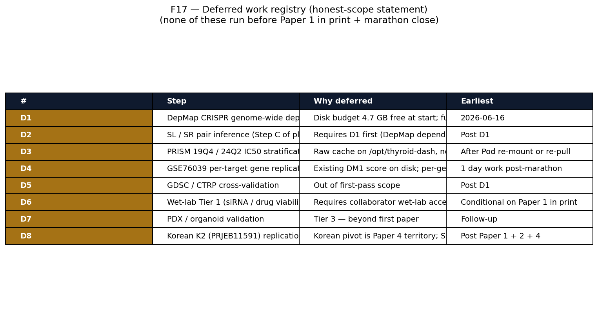
Table T9 — Deferred work registry
| # | Step | Why deferred | Earliest |
|---|---|---|---|
| D1 | DepMap CRISPR genome-wide × DM1 state | Disk budget + matrix size | Post-marathon |
| D2 | SL / SR pair inference | Requires D1 first | After D1 |
| D3 | PRISM 19Q4 / 24Q2 IC50 stratification | Raw cache on /opt/thyroid-dash, not on this dev box | After Pod re-mount or re-pull |
| D4 | GSE76039 per-target gene replication | DM1 score on disk; per-gene matrix not pre-extracted | 1-day work post-marathon |
| D5 | GDSC / CTRP cross-validation | Out of first-pass scope | Post D1 |
| D6 | Wet-lab Tier 1 (siRNA / drug viability) | Requires collaborator wet-lab access | Conditional on Paper 1 in print |
| D7 | PDX / organoid validation | Tier 3 — beyond first paper | Follow-up |
| D8 | Korean K2 (PRJEB11591) replication | Korean pivot is Paper 4 territory | Post Paper 1 + 2 + 4 |
§ 11 — Data provenance
Every cell in this Atlas traces back to a local file. No new download was performed for Paper 10.
Three data layers feed all 17 figures and 9 tables:
- CCLE thyroid (n=13) — local 4007-gene panel under
project/results/v8p1_rigor/f_ccle_validation/, originally generated for the v8p1 BRS validation track. - DM1-vs-DM2 DGE (51,711 genes) — pre-existing TCGA-THCA bulk DGE under
project/results/dark_matter_phase2/web/data/dge_dm1_vs_dm2.tsv; computed during the dark-matter phase 2 work. - TCGA pancan expression (11,069 samples) — UCSC Xena log2(norm+1) under
project/data/raw/TCGA_pancan/pancan_geneExp.gz; merged withproject_external_st/results/extra/s_tcga_thca_scored.tsvfor DM1-state and OS metadata.
Disk impact this session: 0 new downloads. All Atlas output written under project/results/paper10_atlas/figures/ (~2.0 MB total).
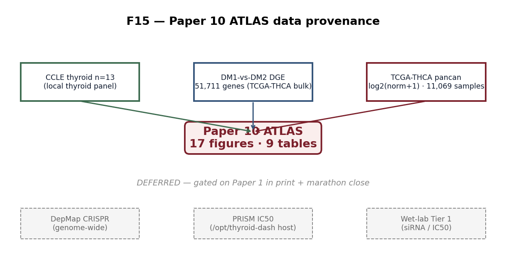
§ 12 — Paper 9 ↔ Paper 10 positioning
Same DM1 anchor, same triangulation. Different communication mode. Both gated on Paper 1 in print + marathon close.
Paper 9 = strategic plan + first-pass results, optimized for written argument. 14 sections of text, deferred-work logic, IP angle, 12-week execution plan. Best for reviewer / advisor consumption when sequence-of-reasoning matters.
Paper 10 = visualization-first ATLAS, optimized for inspection. 17 figures + 9 sortable tables + thick captions. Best for in-meeting reference, slide reuse, and quick lookup.
Both papers point at the same execution plan: full DepMap CRISPR + PRISM + GSE76039 replication start ≥ 2026-06-16.
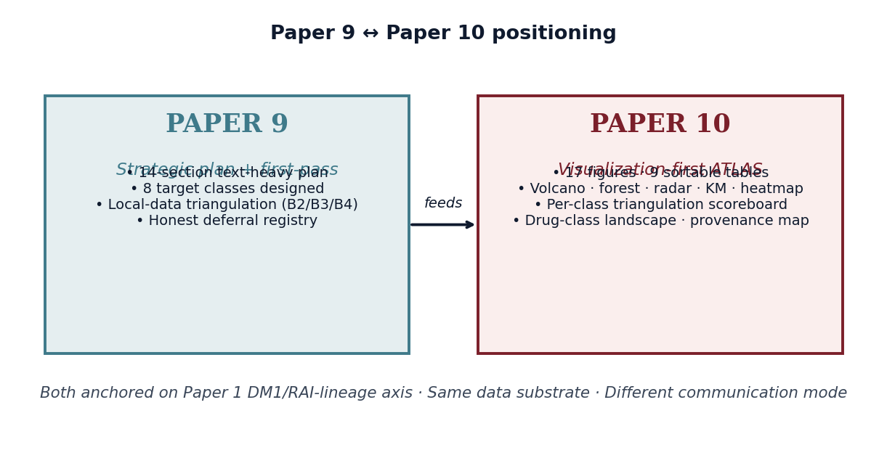
13. Claim boundary
이 atlas 가 어디까지 주장하고 어디부터는 주장하지 않는지 한눈에.
| Claim | Status | Evidence in this atlas | What it would take to upgrade |
|---|---|---|---|
| "36 candidate × 3 layer triangulation directional summary" | YES | F09 / F11 / F12 / T7 | 이미 검증됨 (descriptive) |
| "DM1 axis 가 lineage-collapsed state 이다" | YES | F13 lineage TF sanity floor + T2/T3 | 이미 검증됨 (sanity floor) |
| "KCNN4/OSMR/IL6R/SFK/DDR/MYC/NAMPT 가 후보 SL" | PARTIAL | directional only · F04~F08 / T4~T6 | DepMap state-conditional dependency 검증 (D1) |
| "ATR + CHEK2 = state-conditional vulnerability" | HYPOTHESIS | F07~F08 Cox forest, bulk DGE flat | state-conditional CRISPR 검정 + drug response |
| "Validated synthetic lethality" | NO | (deferred) | DepMap 검증 + cell line replication |
| "Clinical efficacy in DM1-positive thyroid cancer patients" | NO | (없음) | 임상 trial · 별도 pharmacology paper |
| "ISLE / SELECT equivalence" | NO | concept-only borrowing, no benchmarking | 별도 method paper |
| "TROP2 ADC = synthetic lethality" | NO | 명시적 carve-out | 해당 없음 — 다른 mechanism |
14. 한계 · 다음 행동
14.1 한계 (limitations)
- CCLE n=13 thyroid panel. 4007-gene matrix 라서 36 candidate 중 8 만 측정됨. 단일 gene Pearson r 은 통계적 검정력 부족 — directional sanity check 만.
- TCGA-THCA OS event rate 3.2%. Cox 는 underpowered. 효과 크기는 directional prior 로만 사용. 후속 (GSE76039 / Korean K2 / Bundang) replication 으로 검증 필요.
- No DepMap CRISPR. SL pair claim 의 gating analysis 가 deferred (D1). 본 atlas 의 어떤 ranking 도 dependency 가 아닌 expression-correlation 일 뿐.
- No PRISM/GDSC/CTRP IC50. drug-response stratification 안 함. drug-class claim 은 hypothesis level.
- Bulk RNA only. immune/stroma contamination 이 candidate 별로 다른 영향. single-cell · deconvolution 검증은 후속.
- State-conditional artifact risk. ATR Cox 가 강한 것은 진짜 state-conditional 일 수도, 단순히 advanced disease 의 marker 일 수도 있다. wet-lab 검증 전엔 가설.
14.2 다음 행동 (post-marathon)
15. 데이터 / 다운로드 · 자매 페이지
Paper 10 의 figure / table 은 모두 local 산출물에서 재현 가능. Paper 11/12 는 본 atlas 의 36-candidate panel 을 downstream 으로 사용한다.